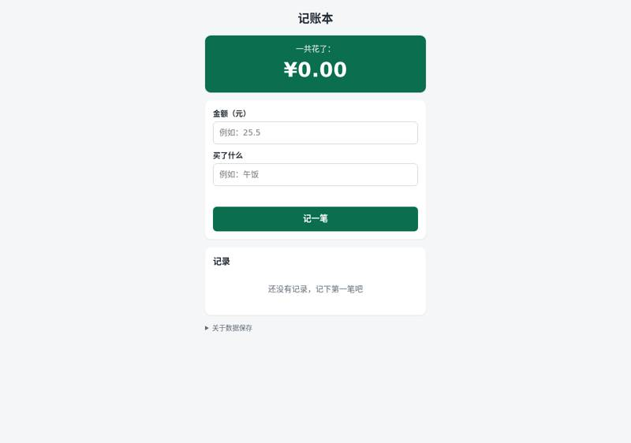
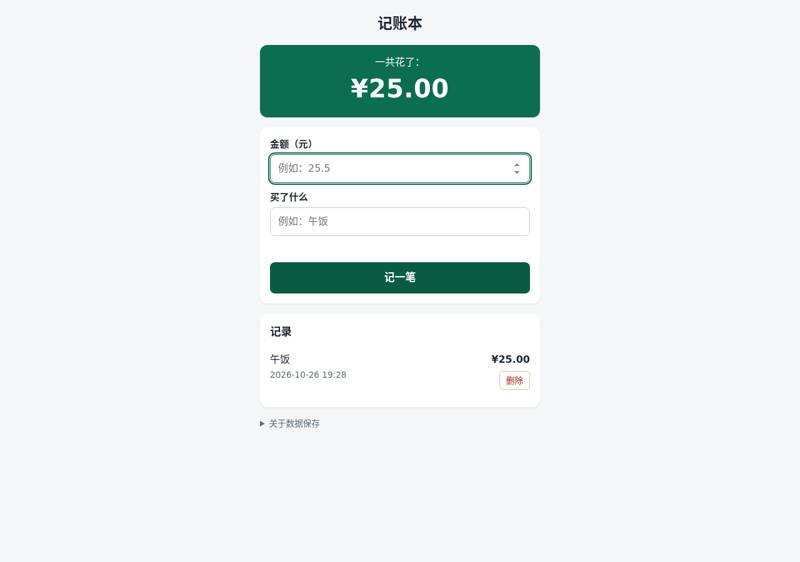
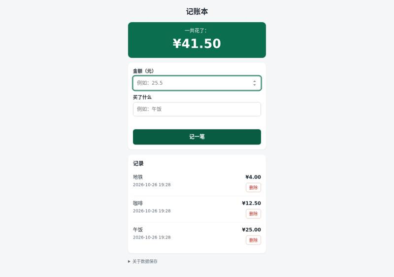
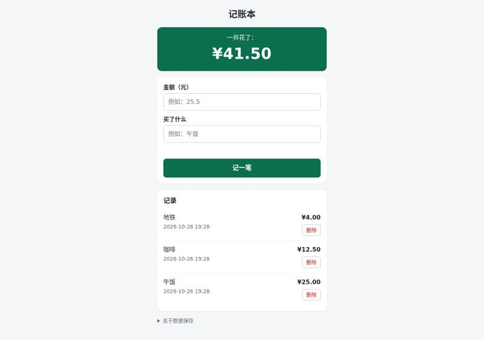
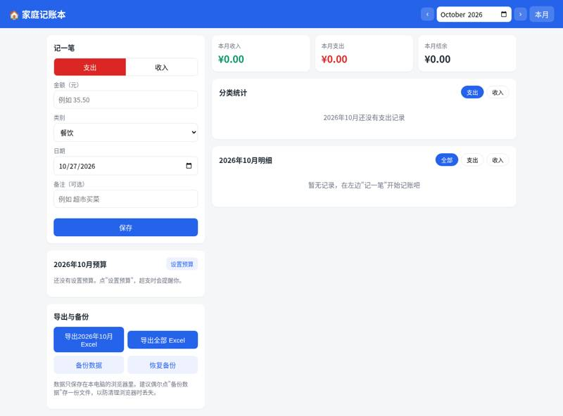
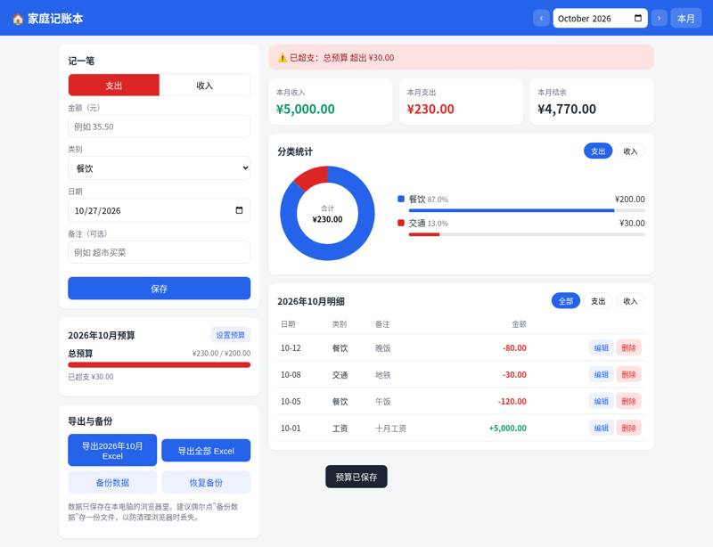
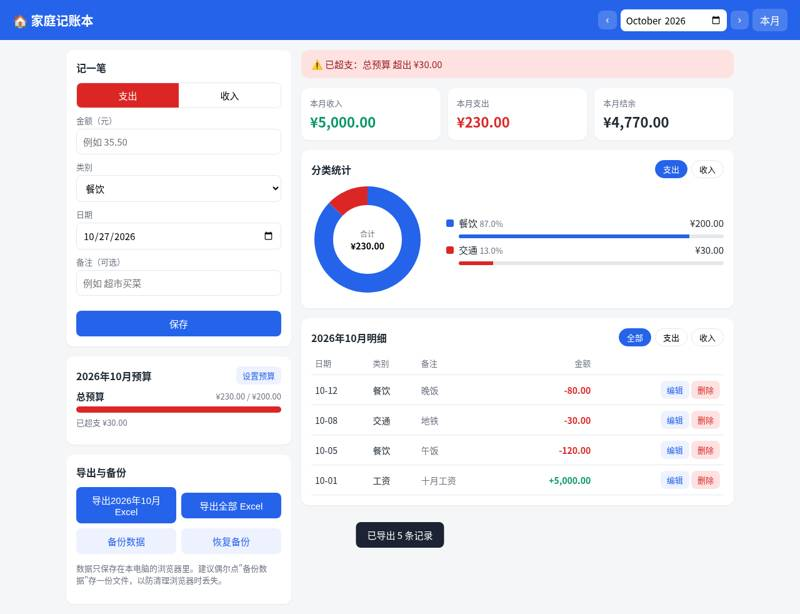
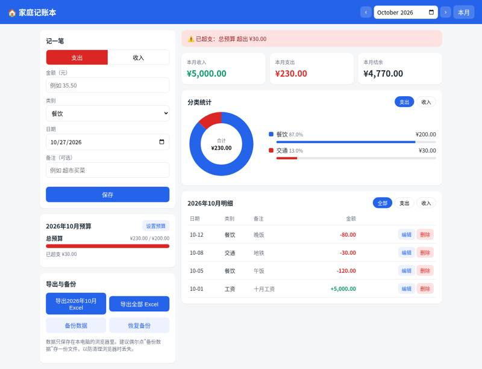

peterfei/ai-agent-team: vibe coding test
Installed from its README in a throwaway sandbox, then used by Claude Code (Claude Opus 5.5) to build two apps from requests written the way someone who cannot code would write them. Whenever the build stopped to ask a question or for approval, it got the same reply. A separate tester session, with no tool loaded, opened each app in a browser and ran the checks; we went through every screenshot. All results · The task · The tester's checks
Install: SETUP: done ai-agent-team (agents, commands, skills + thread-manager MCP server) via `sudo npm install -g ~/src`, `ai-agent-team init` (defaults: global ~/.claude), `claude mcp add --scope user thread-manager node /home/runner/.claude/skills/thread-manager/dist/index.js` (repo commit 9d85024fd5ba)
One sentence: an expense page
The request, word for word: 帮我做一个记账小网页：每次花钱记一笔（花了多少、买了什么），页面上能看到一共花了多少，关掉浏览器再打开，记录还在。
Ran: all 4 checks passed. Opens: double-click. Built in 13.8 minutes (limit 30); it stopped to ask 0 time(s); how it ended: finished. Usage at API prices: $1.54 (9.1 times the run with no tool). Packages: none (plain HTML, CSS and JavaScript).
| Check | Verdict | What the tester saw | Screenshot |
|---|---|---|---|
| opens | pass | file:// 打开后显示：'记账本\n一共花了：\n¥0.00\n金额（元）\n买了什么\n\n记一笔\n记录\n\n还没有记录，记下第一笔吧\n\n关于数据保存' |  |
| records an expense | pass | 记录区：'\n\n午饭\n\n2026-10-26 19:28\n\n¥25.00\n删除\n关于数据保存'；合计 ¥25.00 |  |
| total is right | pass | 合计显示 ¥41.50；页面：'记账本\n一共花了：\n¥41.50\n金额（元）\n买了什么\n\n记一笔\n记录\n\n地铁\n\n2026-10-26 19:28\n\n¥4.00\n删除\n\n咖啡\n\n2026-10-26 19:28\n\n¥12.50\n删除\n\n午饭\n\n2026-10-26 19:28\n\n¥25.00\n删除\n关于数据保存' |  |
| still there after closing and reopening | pass | 重新打开后合计 ¥41.50；页面：'记账本\n一共花了：\n¥41.50\n金额（元）\n买了什么\n\n记一笔\n记录\n\n地铁\n\n2026-10-26 19:28\n\n¥4.00\n删除\n\n咖啡\n\n2026-10-26 19:28\n\n¥12.50\n删除\n\n午饭\n\n2026-10-26 19:28\n\n¥25.00\n删除\n关于数据保存' |  |


Where it stopped, and got the reply 「我不懂这些，你按你推荐的来，继续做。」
- It did not stop to ask.
One paragraph: a family ledger
The request, word for word: 做一个家庭记账本网页：能记收入和支出（金额、类别、日期、备注），能按月看收入、支出和结余，能看每个类别花了多少（最好有图），可以设每月预算、超了要提醒，还能把记录导出成 Excel 表格。数据存在我电脑上就行。
Ran: all 8 checks passed. Opens: double-click. Built in 5.0 minutes (limit 45); it stopped to ask 0 time(s); how it ended: finished. Usage at API prices: $1.51 (1.5 times the run with no tool). Packages: none (plain HTML, CSS and JavaScript).
| Check | Verdict | What the tester saw | Screenshot |
|---|---|---|---|
| opens | pass | file:// page shows 家庭记账本 with 记一笔 form, budget, export and monthly summary |  |
| records income and expenses | pass | income category used: 工资 (income list: ['工资', '奖金', '理财', '兼职', '红包', '其他']). List text: 全部 | 支出 | 收入 | 日期 类别 备注 金额 | 10-12 餐饮 晚饭 -80.00 编辑 删除 | 10-08 交通 地铁 -30.00 编辑 删除 | 10-05 餐饮 午饭 -120.00 编辑 删除 | 10-01 工资 十月工资 +5,000.00 编辑 删除 | 已记一笔：支出 ¥80.00 | |
| month's income, spending and balance | pass | October 2026 shows 本月收入 5,000.00, 本月支出 230.00, 本月结余 4,770.00 |  |
| spending by category | pass | 分类统计 section text: 支出 | 收入 | 合计 | ¥230.00 | 餐饮 87.0% | ¥200.00 | 交通 13.0% | ¥30.00 | 2026年10月 |  |
| switches between months | pass | September 2026: 收入 0.00, 支出 999.00, 结余 -999.00, 999 购物 record listed: True; back to October: 收入 5,000.00, 支出 230.00, 结余 4,770.00 (month switched via the page's month picker; also has ‹ › buttons) | |
| warns over budget | pass | after setting total monthly budget 200 for 2026-10, budget panel shows: 设置预算 | 总预算 | ¥230.00 / ¥200.00 | 已超支 ¥30.00 |  |
| exports a spreadsheet | pass | clicked 导出全部 Excel, got 家庭记账_全部.xlsx; rows: [['日期', '类型', '类别', '金额（元）', '备注'], ['2026-09-15', '支出', '购物', -999, '衣服'], ['2026-10-01', '收入', '工资', 5000, '十月工资'], ['2026-10-05', '支出', '餐饮', -120, '午饭'], ['2026-10-08', '支出', '交通', -30, '地铁'], ['2026-10-12', '支出', '餐饮', -80, '晚饭'], ['月份', '收入（元）', '支出（元）', '结余（元）'], ['2026-09', 0, 999, -999]] |  |
| still there after closing and reopening | pass | after reopen October shows 收入 5,000.00, 支出 230.00, 结余 4,770.00, 4 October records listed: True; September 999 record listed: True |  |


Where it stopped, and got the reply 「我不懂这些，你按你推荐的来，继续做。」
- It did not stop to ask.